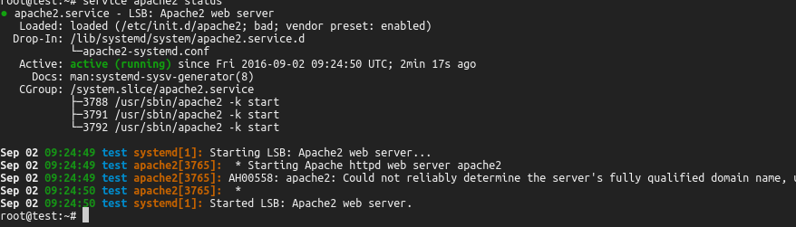
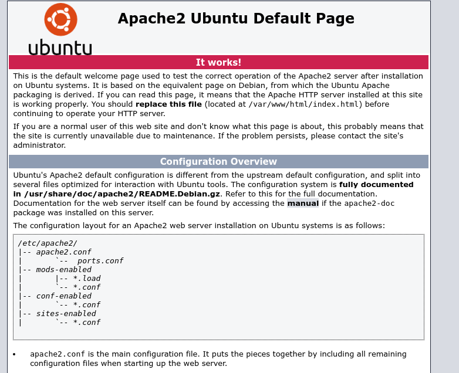
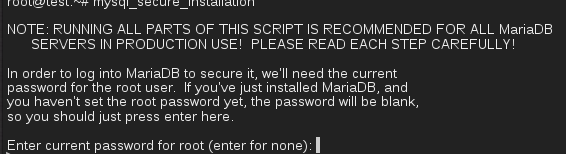

Installation LAMP
Table of Contents
Einführung
LAMP ist die Abkürzung für Linux Apache MariDB PHP und damit meist die erste Installation auf einem Server. MariaDB ist ein forge von MySQL. Früher stand das M für MySQL. Als Linux verwenden wir Ubuntu 16.04
Installation von Apache
Apache ist der Webserver und dient dazu, Inahltsseiten im Internet zur Verfügung zu stellen. Eine Installation fängt immer mit einem Update des Systems an. Der erste Befehl aktualisiert die Paketlisten auf dem System. Der zweite Befehl führt dann die Aktualisierung des Systems durch.
apt update apt dist-upgrade
Den Webserver installieren wir mit dem Befehl
apt-get -y install apache2
Der Befehl sollte fehlerlos durchlaufen. Der Parameter y dient dazu, dass keine Abfrage kommt, ob wir wirklich ein Programm installieren möchten. Mit dem Befehl
service apache2 status
überprüfen wir, ob der Apache wirklich gestartet ist. Wir bekommen folgende Ausgabe:

Figure 1: Apache Webserver Statusanzeige
Wichtig ist hierbei der grüne Text "Active: active (running)". Die Fehlermeldung "AH00558: apache2: Could not reliably determine the server's fully qualified domain name" besagt nur, dass noch kein gültiger Servername (URI) hinterlegt wurde. Wir verlassen die Anzeige mit der Taste q.
Nach erfolgreichen Test geben wir in unserem Browser http://%5Bip/] ein und müssten die Apache Startseite sehen:

Figure 2: Startseite des Apache Webservers
Installation von MariaDB
Maridb ist ein Datenbanksytem und besteht einmal aus einem Server und einem Client. beide Teile werden zusammen istalliert mit dem Befehl:
apt-get -y install mariadb-server mariadb-client
Standardmässig ist das root-Passwort nicht(!) gesetzt. Wir können uns als einfach mit dem Befehl
mysql -u root
an der Datenbank anmelden. mit dem Befehl exit verlassen wir den Client wieder.
Ein Root-Passwort setzen wir auf "fbs" mit dem Befehl
mysql_secure_installation
Danach kommt folgende Ausgabe an deren Ende wir aufgefordert werden, ein Passwort für root einzugeben.

Figure 3: Eingabe root-Passwort MariaDB